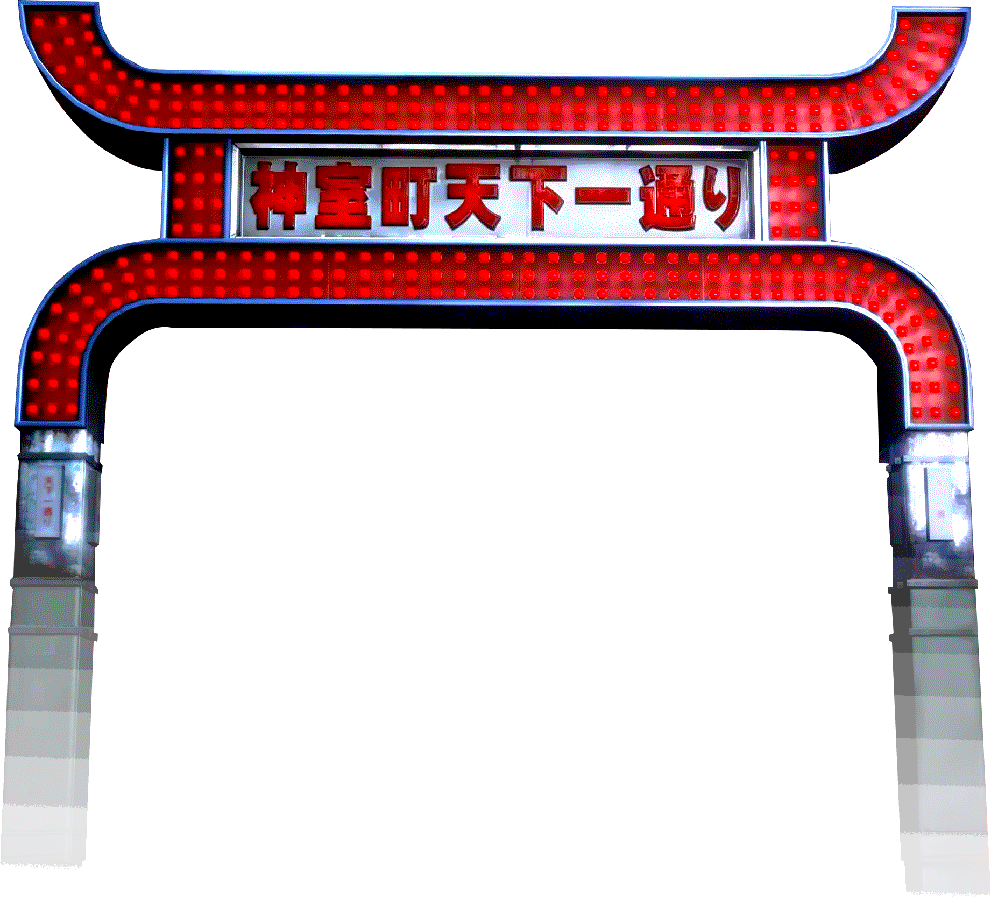

welcome to my yakuza shrine! or fansite. really this is just a place for me to dump all my thoughts about my favorite video game series. after the recent (as of writing this - march 2024) release of infinite wealth, i felt inspired to replay the series, so the pages will slowly be filled as i play through the series again. i might share links to cool yakuza related websites i've found, fan translations of tie-in media, or my favorite screenshots too. if you visit a game's page, please expect major spoilers for that game, plus each previous game in the series (ex. the page for yakuza 6 may include spoilers for the events of yakuza 0-5).
